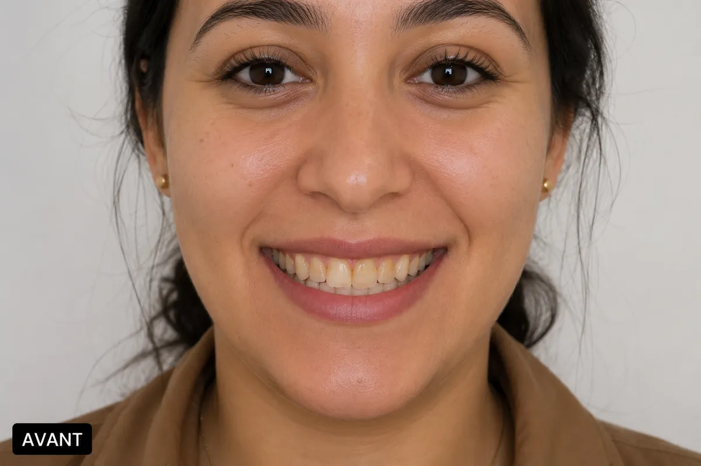
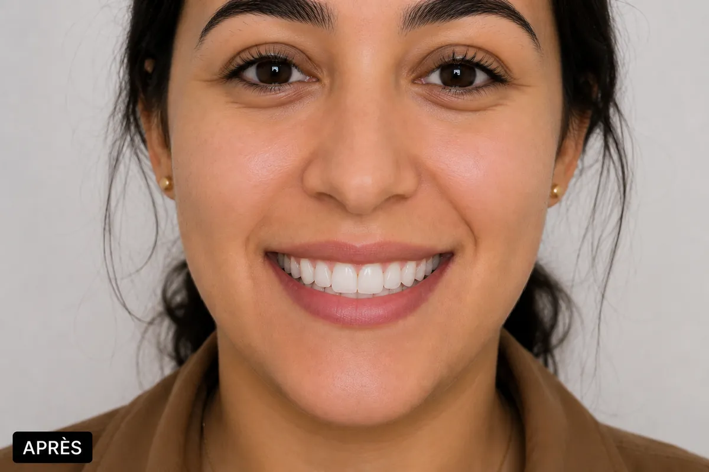
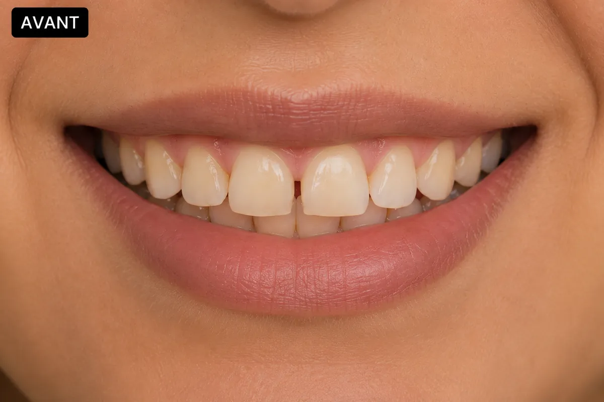
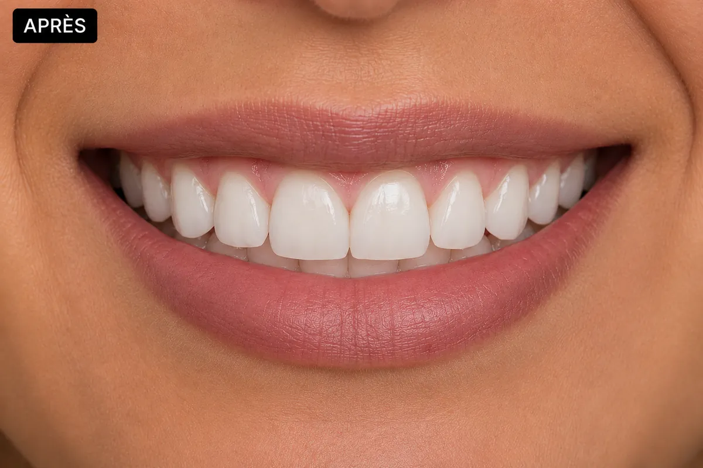
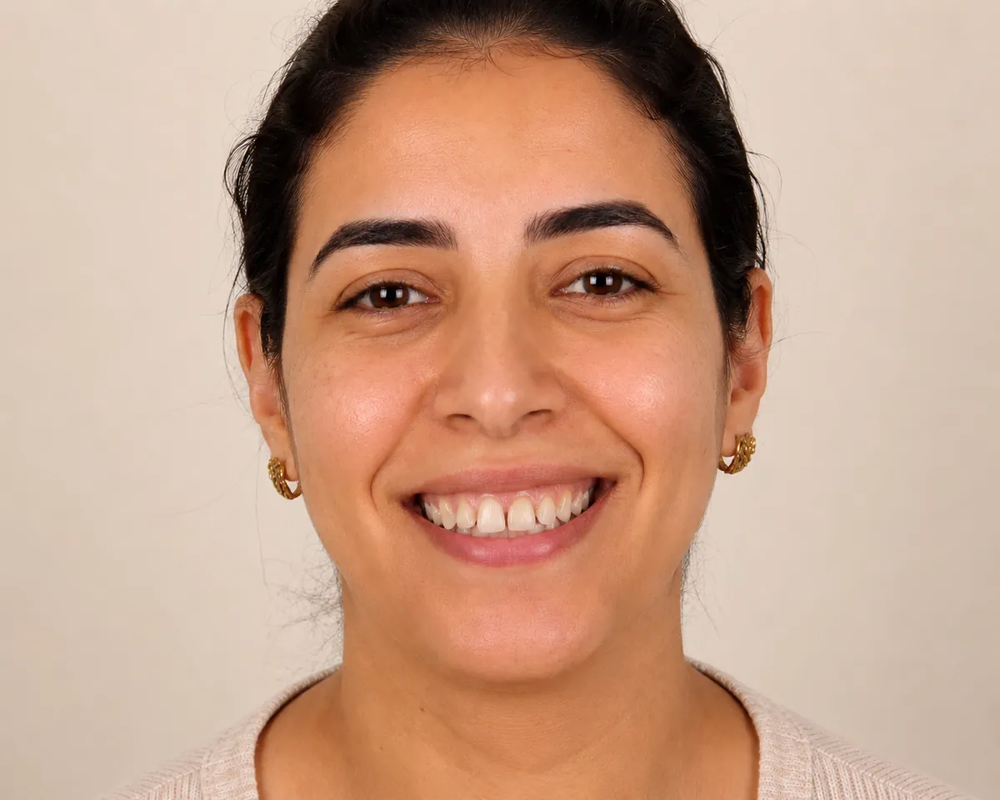
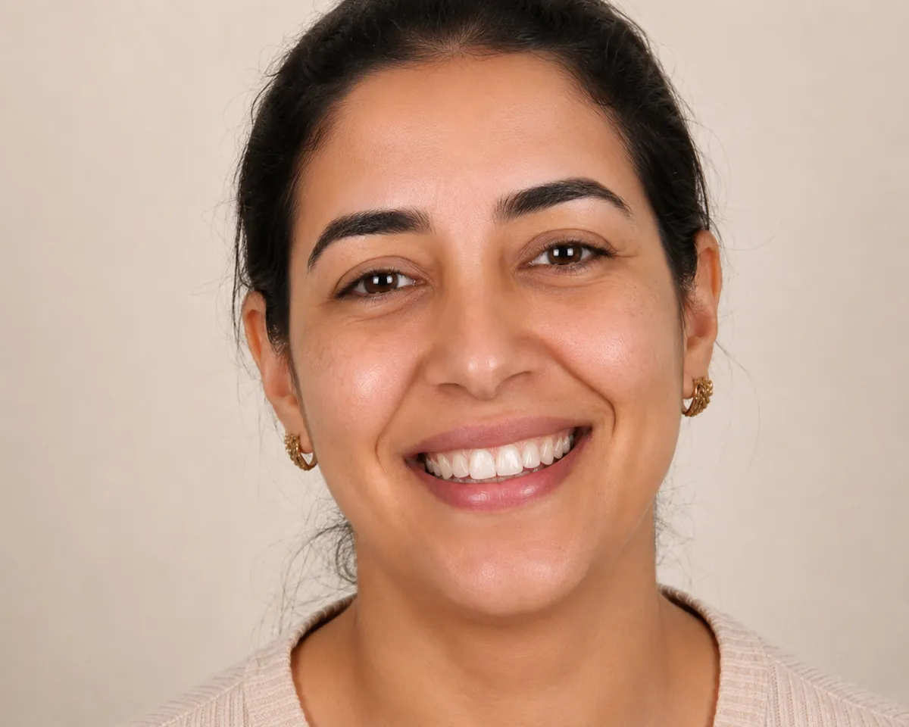
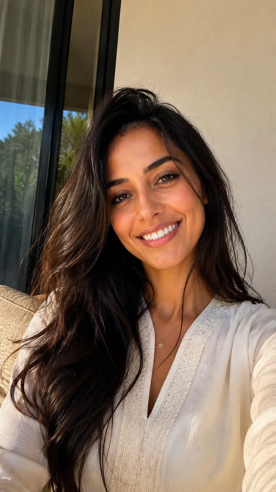
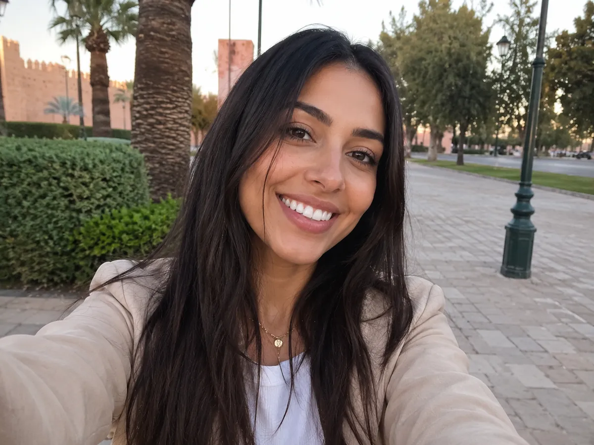
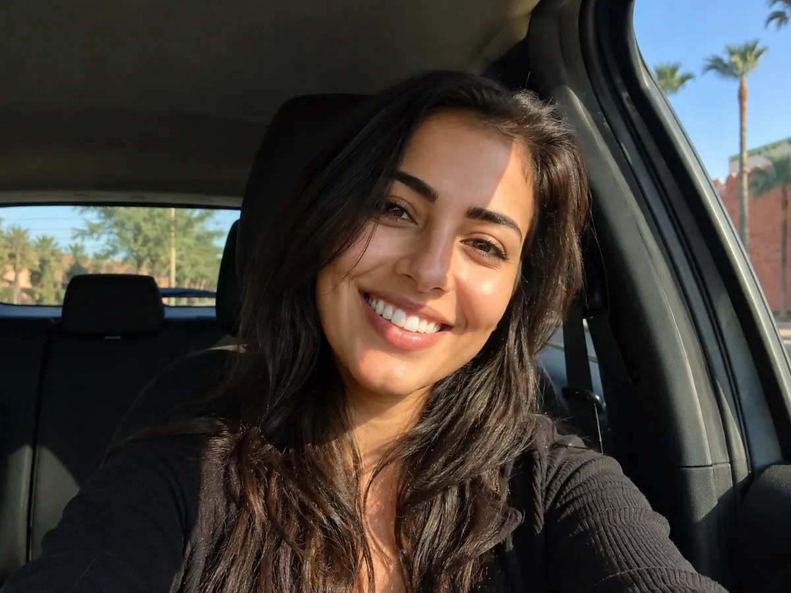

Éclaircissement du sourire
Un résultat plus lumineux, présenté avec le même cadrage pour comparer le sourire clairement.
Une approche esthétique claire, progressive et adaptée à votre visage : couleur, forme, équilibre et confiance au sourire.
L'esthétique dentaire peut concerner la teinte, les petites imperfections, l'usure, l'harmonie des formes ou le rendu global du sourire. Chaque demande commence par une analyse calme et des explications concrètes.
Quelques exemples pour visualiser ce que chaque approche peut apporter au sourire. Le plan de traitement est toujours défini après un examen.


Un résultat plus lumineux, présenté avec le même cadrage pour comparer le sourire clairement.


Une restauration discrète pour retrouver une forme plus harmonieuse et un rendu naturel.


Un sourire plus équilibré, avec une lecture simple du changement obtenu.
Images d'illustration. Les résultats varient selon chaque situation clinique.
Sourires naturels, détails esthétiques et restaurations soignées : l'objectif est un résultat harmonieux qui vous ressemble.



Comprendre votre demande, votre sourire et votre situation clinique.
Présenter les options possibles, les limites et les étapes du traitement.
Avancer avec une solution adaptée, confortable et cohérente avec vos attentes.
Donner les conseils nécessaires pour préserver le résultat dans le temps.
L'esthétique dentaire regroupe plusieurs approches. Le choix dépend de ce qui vous gêne, de l'état de vos dents et du résultat que vous souhaitez. Voici les principales, expliquées simplement.
Il éclaircit la teinte naturelle des dents. Il ne modifie pas la couleur des couronnes ni des composites existants. En savoir plus sur le blanchiment dentaire.
Elles réparent une dent abîmée, usée ou cassée avec un matériau dont la teinte est choisie pour se fondre avec vos dents voisines.
Lorsqu'une dent est très abîmée ou absente, une prothèse dentaire peut restaurer à la fois la fonction et l'harmonie du sourire.
Plusieurs petits ajustements combinés, sur la forme ou la teinte, peuvent rendre le sourire plus équilibré tout en restant naturel.
Tout commence par une discussion : ce qui vous gêne quand vous souriez, ce que vous aimeriez changer et ce que vous souhaitez garder. Le Dr Hicham Bouaamri examine ensuite vos dents et vos gencives, car une bouche en bonne santé est la base de tout traitement esthétique.
Si des caries, une inflammation des gencives ou du tartre sont présents, ils sont traités en priorité. Le plan esthétique vous est ensuite présenté étape par étape, avec les options possibles et ce que l'on peut raisonnablement en attendre. Le nombre de séances dépend de la solution choisie et de votre situation.
Un beau résultat se protège au quotidien. Quelques habitudes simples aident à le conserver plus longtemps :
L'objectif est un sourire harmonieux qui vous ressemble. La teinte et la forme sont choisies avec vous pour s'accorder avec votre visage et vos autres dents.
Non. Le blanchiment agit sur les dents naturelles uniquement. Les couronnes, facettes ou composites existants gardent leur teinte, ce qui est pris en compte dans le plan de traitement.
Cela dépend de la solution choisie et de l'état de vos dents. Le nombre de rendez-vous vous est indiqué après l'examen, au moment où le plan de soins vous est présenté.
Oui. Les caries, le tartre et les problèmes de gencives sont traités en priorité, car un sourire esthétique repose sur des dents et des gencives en bonne santé.
Appelez le cabinet au 05 22 66 69 57 ou envoyez un message WhatsApp pour prendre rendez-vous. La consultation permet d'évaluer votre situation avant toute proposition.